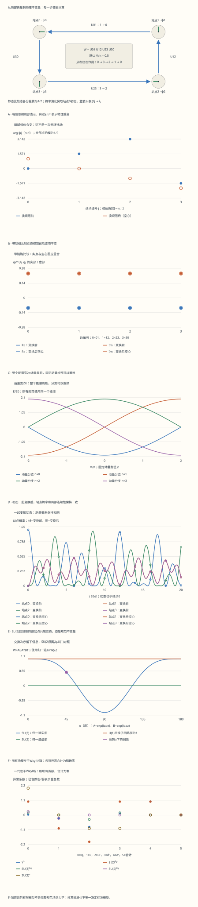

本页目录
- 学习层：每个地点都能换相位，什么还能被测量？
- 1. 从比较规则开始：两支箭头不一定用同一把尺
- 2. 开路径与闭回路：端点什么时候消失？
- 3. 不只检查一圈相位：把 Hamiltonian 也写出来
- 4. 通量周期：为什么“同一条谱线”可以换名字？
- 5. 概率、流与连续性：局部的验证比总和更严格
- 6. 连续规范原理：允许什么，没有决定什么？
- 7. 非阿贝尔回路：为什么必须取迹？
- 8. 标准模型的“粒子表”其实是一张表示表
- 9. 手算一次异常抵消：重复数不是装饰
- 10. Higgs 与 Yukawa：超荷对上还不够，表示也要成单态
- 11. 从“看粒子猜相互作用”改成检查振幅
- 12. 八道自检：能否指出每个“不变”的对象？
粒子 I · 规范原理、可观测量与标准模型粒子谱
目标：算清“换一种局部表示”和“改变物理状态”的区别；从四站环的能谱、概率和回路开始，再用精确表示表核对标准模型的一代粒子，而不是只背一张粒子名录。
学习层：每个地点都能换相位，什么还能被测量？
1. 从比较规则开始：两支箭头不一定用同一把尺
把复数的相位画成箭头很直观。但若每个地点都独立选择“零度方向”，两个地点箭头角度的差就不能直接当成物理差别。你还需要一条规则：先把一个地点的表示搬到另一个地点，再比较。这条规则就是联络。
本页把四个地点编号为 \(0,1,2,3\)，排成一圈。复振幅 \(\psi_i\) 在站点上，链路 \(U_{ij}\) 把 \(j\) 点的表示搬到 \(i\) 点。选定约定后，局域换基写成
于是 \(\psi_i^*\psi_j\) 一般会变，但
不变：左端、链路两端和右端的相位逐项抵消。实验会同时显示变换前后的复数，而不只显示折回 \([-\pi,\pi]\) 的角度；这样跨过角度分支边界时不会误判。
三个容易混淆的对象：量子态矢量的整体相位不改变射线；自由场理论的全局内部对称性可给出 Noether 流；规范描述中的局域冗余则需要场和联络一起变换。它们有关联，但不能用同一句“相位不重要”全部代替。Noether 定理要求作用量在变换下具有相应不变性，随后才在运动方程成立时得到守恒流，并非只要在解上某个量不变就够了。
无脚本对照：六份固定记录包含U(1)场/链路/Hamiltonian变换、四个本征态、201个时间点的复振幅与概率流、241个通量点、完整SU(2)回路矩阵和181个链路角，以及一代标准模型的精确有理数异常账。

| 预设 | Φ(度) | J/E0 | ReW(U1) | ImW(U1) | ReTrW(SU2)/2 | 当前总概率 |
|---|---|---|---|---|---|---|
| default | 90 | 1 | -1.110223e-16 | 1 | 0.5 | 1 |
| zero | 0 | 1 | 1 | 0 | 0.5 | 1 |
| single | 90 | 1 | -1.110223e-16 | 1 | 0.5 | 1 |
| flux-quantum | 360 | 1 | 1 | -2.4492936e-16 | 0.5 | 1 |
| decoupled | 90 | 0 | -1.110223e-16 | 1 | 0.5 | 1 |
| noncommuting | 90 | 1 | -1.110223e-16 | 1 | -1 | 1 |
下载六份完整记录。U(1)通量与SU(2)交换子回路是两个并列模型；SU(2)局域角用exp(iχσ/2)，不与U(1)的exp(iχ)混用。表中接近0的浮点残差不代表异常未抵消；异常合计另用精确分数0/1记录。
2. 开路径与闭回路：端点什么时候消失？
沿 \(2\to1\to0\) 的开路径，搬运矩阵是
中间点 \(1\) 的相位消掉了，两端仍在。加上端点物质场后，\(\psi_0^*U_{01}U_{12}\psi_2\) 才成为不变量。
闭回路取 \(0\to3\to2\to1\to0\)，按矩阵作用从右往左读：
在 \(U(1)\) 中所有因子可交换，因此 \(W'=W\)。若 \(U_{ij}=e^{ia_{ij}}\)，则 \(W=e^{i\Phi}\)，其中
反向走同一条边用 \(U_{ji}=U_{ij}^*\)；反向回路给 \(W^*\)。不能把所有有向边都不加区别地用同一个角度。
在一条没有闭环的开放链上，可以递归选择站点相位，把全部链路角移除。闭环中若 \(W\ne1\)，最后一条边会留下无法同时消掉的信息。规范变换能重新分配链路角，不能随意抹去回路通量。
格点上的链路、逆边共轭、闭回路取迹和开路径加端点场，都来自同一套平行搬运结构。Tong，格点规范理论 §4.2.1
3. 不只检查一圈相位：把 Hamiltonian 也写出来
只验证 \(W\) 不变还不够，我们可以进一步检查真实的量子演化。选固定外加链路，单粒子四站 Hamiltonian 为
这里 \(J\ge0\) 是跃迁能量，实验以 \(E_0\) 为单位；时间以 \(\hbar/E_0\) 为单位。令
这是幺正相似变换，故本征值集合不变，本征向量相应变成 \(\Omega|u_n\rangle\)。对任何初态，也应一起换成 \(|\psi'(0)\rangle=\Omega|\psi(0)\rangle\)，这样
因此 \(|\psi_i'(t)|^2=|\psi_i(t)|^2\)。若只变换初态而把链路和 Hamiltonian 固定，通常已经改变了相对相位关系，可以得到不同能量和动力学；那不是本页测试的规范冗余。
本页使用不随时间变化的 \(\Omega\)。若局域换基依赖时间，变换后的 Hamiltonian 还须包含时间导数项，不能只保留 \(\Omega H\Omega^\dagger\)。此外，链路在这里是外加背景；我们没有给电场建立共轭变量，也没有构造完整规范场量子理论的 Gauss 约束物理态空间。
4. 通量周期：为什么“同一条谱线”可以换名字？
在均匀规范中，每条有向链路取 \(U=e^{i\Phi/4}\)。Fourier 本征态为
代入 Hamiltonian 得
例如零通量时能谱为 \(\{-2J,0,0,2J\}\)。加上一个通量量子，
整个能谱以 \(2\pi\) 为周期，但固定动量标签的分支可以被置换。实验按 \(n\) 标注曲线，不在每个通量点重新按能量排序；这样能看清“谱集合相同”和“分支标签不变”不是同一件事。
默认 \(\Phi=\pi/2,J=E_0\) 时，四条动量分支的能量约为 \((-1.847759,\ 0.765367,\ 1.847759,\ -0.765367)E_0\)。改变四个 \(\chi_i\) 后这些数值不变。把 \(J\) 降到零，所有站点都不再跃迁，能谱全为零；外加链路及其 \(W\) 仍可定义，但这个解耦粒子的动力学不再探测它。
5. 概率、流与连续性：局部的验证比总和更严格
动力学实验从站点 \(0\) 出发，而前面链路比较表采用各分量模为 \(1/2\) 的另一份静态比较态。两份状态各自归一化，不能把它们的能量或双线性数值混用。
站点 \(0\) 初态的完整振幅可以用四个本征态相加：
归一化应满足 \(\sum_j|\psi_j(t)|^2=1\)，但这还不能排除站点之间的流算错。以无量纲时间计，从 \(j\) 流向 \(i\) 的概率流为
设第 \(i\) 条边对应 \(i+1\to i\)，则
恢复物理时间时，右边要除以 \(\hbar\)。实验逐站保留振幅导数、密度导数、流入减流出三份结果，并分别核对变换前后流不变。概率图中的实线与空心圈表示两种规范下的同一次物理实验；它们应当重合。
6. 连续规范原理：允许什么，没有决定什么？
对于电荷参数为 \(q\) 的 Dirac 场，取自然单位 \(\hbar=c=1\)，使用与前文一致的约定
逐项求导可验证 \(D_\mu'\psi'=e^{i\chi}D_\mu\psi\)。Lagrangian 展开为
Lagrangian 中的相互作用项是最后一项，不额外乘一个 \(i\)；在相应微扰约定下，费曼顶点因子是 \(-iq\gamma^\mu\)。二者来自不同步骤，不能把顶点因子原样塞回 Lagrangian。
此约定下，从 \(j\) 到 \(i\) 的连续平行搬运为 \(U_{ij}=\exp[-iq\int_j^i A_\mu dx^\mu]\)，所以它恰好按前面的端点规则变换。格点角 \(a_{ij}\) 是这个无量纲线积分的负耦合倍数；改变方向或改用 \(D=\partial-iqA\) 都会改变符号，必须整套同步。
对非阿贝尔群，\(\Omega\) 与 \(A_\mu\) 是矩阵。若取 \(D_\mu=\partial_\mu+igA_\mu\)，则
规范协变性约束了允许的相互作用形式，但还没有选择规范群、物质表示、电荷、耦合强度、势能和真空。给定场内容、Lorentz 对称性、局域性及某个算符维数截断后，才可以系统列出允许项。高维有效算符并不会因为不在最小重整化模型中就自动消失。
7. 非阿贝尔回路：为什么必须取迹？
现在把 \(U(1)\) 单位复数换成 \(SU(2)\) 矩阵。每条边依旧按
变换。闭环相乘后，中间端点消掉，但起点仍留下
所以 \(W\) 矩阵一般不保持逐元素不变；它的迹与本征值保持不变。对 \(U(1)\)，共轭变换因交换性退化为恒等，这才得到第 2 节更简单的结论。
实验选择
利用 \(\sigma_a^2=I\)，可写 \(e^{i\alpha\sigma_a}=\cos\alpha\,I+i\sin\alpha\,\sigma_a\)，直接乘出
在 \(\alpha=\pi/2\)，\(A=i\sigma_x,B=i\sigma_z\)，回路为 \(-I\)，归一迹为 \(-1\)；对应的阿贝尔交换子回路总是 \(1\)。在 \(\alpha=\pi\)，两条链路都为中心元素 \(-I\)，又变得可交换。
四个局域变换分别取 \(\Omega_j=\exp(i\chi_j\sigma_{a_j}/2)\)，轴依次为 \(x,y,z,x\)。这里的 \(\chi_j/2\) 来自生成元 \(\sigma_a/2\) 的约定，与 \(U(1)\) 的 \(e^{i\chi_j}\) 分开。若回路恰好为 \(\pm I\)，共轭后矩阵也会保持原样，这是特殊参数，不是一般定理。
反向回路为 \(W^\dagger\)。\(SU(2)\) 的这个归一迹是实数，反向后仍相同；因此只有迹相同，不能反推两条有向路径相同。同样，一次有限回路的数值不变性不构成对禁闭或渐近自由的证明。
8. 标准模型的“粒子表”其实是一张表示表
通常把局部规范结构写作 \(SU(3)_c\times SU(2)_L\times U(1)_Y\)。这里 \(U(1)_Y\) 是超荷，不是破缺后的电磁群。全局规范群还可能涉及中心子群的商；仅写 Lie 代数和下面的局部表示表，不能决定所有全局拓扑问题。
取电荷约定 \(Q_{\mathrm{em}}=T_3+Y\)。为了统一异常核算，所有费米子都写成左手 Weyl 场：
| 左手场 | \(SU(3)_c\) | \(SU(2)_L\) | \(Y\) | 分量的 \(Q_{\mathrm{em}}\) | Weyl 分量数 |
|---|---|---|---|---|---|
| \(Q\) | \(\mathbf3\) | \(\mathbf2\) | \(1/6\) | \(2/3,-1/3\)，各三色 | \(6\) |
| \(L\) | \(\mathbf1\) | \(\mathbf2\) | \(-1/2\) | \(0,-1\) | \(2\) |
| \(u^c\) | \(\overline{\mathbf3}\) | \(\mathbf1\) | \(-2/3\) | \(-2/3\)，三色 | \(3\) |
| \(d^c\) | \(\overline{\mathbf3}\) | \(\mathbf1\) | \(1/3\) | \(1/3\)，三色 | \(3\) |
| \(e^c\) | \(\mathbf1\) | \(\mathbf1\) | \(1\) | \(1\) | \(1\) |
\(u^c\) 是原右手上型夸克的左手共轭场，因此表示和电荷都与原场共轭；不能把表中的 \(-2/3\) 当成上夸克本身的电荷。\(SU(2)\) 的基本表示是赝实的，双重态共轭的写法可以通过反对称张量联系，但手征性仍要分清。
一代共有 \(6+2+3+3+1=15\) 个 Weyl 分量。这既不是“15种被实验单独命名的粒子”，也不是把粒子和反粒子再重复加一次。三代复制相同规范表示；质量和混合来自更进一步的结构。最小表没有加入右手中微子，Higgs 则是额外的复标量双重态，表示为 \((\mathbf1,\mathbf2)_{1/2}\)，分量电荷为 \((1,0)\)。
规范玻色子的数目来自相应 Lie 代数维数：\(8\) 个胶子、\(3\) 个弱同位旋规范场和 \(1\) 个超荷场。电弱破缺后，后四者重组为 \(W^\pm,Z,\gamma\)；不要在破缺前把超荷场直接叫光子。这份表示结构与后面的异常、Yukawa 条件互相核对。Tong，标准模型 §5.1
9. 手算一次异常抵消：重复数不是装饰
手征规范理论需要通过量子一致性检查。这里核算一代左手费米子的微扰规范异常，采用 \(T(\mathbf3)=T(\mathbf2)=1/2\)，以及立方指标 \(A(\mathbf3)=1,A(\overline{\mathbf3})=-1\)。实验使用约分后的有理数，不用近似小数“接近零”替代精确抵消。
超荷立方异常为
与引力混合的超荷异常系数是
含两个非阿贝尔生成元时，要乘相应 Dynkin 指标和另一种表示的重复数：
纯 \(SU(3)^3\) 异常则是 \(2-1-1=0\)。这里共轭表示的立方指标反号，而 \(T(\mathbf3)=T(\overline{\mathbf3})\) 不反号；不能对所有指标机械地用同一条规则。
\(SU(2)\) 基本表示没有这种微扰立方异常，但还有全局 Witten 异常的检查：本表的基本双重态数为三色夸克提供的 \(3\) 加上轻子的 \(1\)，合计 \(4\)，为偶数。Higgs 是标量，不进入这些费米异常和，也不补救一个奇数 Weyl 双重态理论。
这些抵消是该模型的一致性条件，不是从一条原则唯一推出整套标准模型；也不意味着我们已经处理所有可能的全局规范群、引力和高维扩展问题。如果少算一种场或漏一个颜色重复数，精确的零就会被破坏。
10. Higgs 与 Yukawa：超荷对上还不够，表示也要成单态
在全左手记号下，可以示意写出三类 Yukawa 组合：
它们的超荷和分别为
还要把颜色、弱表示和 Weyl 自旋指标正确缩并：例如 \(\mathbf3\otimes\overline{\mathbf3}\) 含颜色单态，两个弱双重态可借助反对称张量形成单态，双重态与其对偶可用自然配对。只检查电荷相加为零，不足以证明一个算符允许。
在指定 Higgs 真空后，电弱群留下未破缺的电磁子群，光子保持无质量，\(W/Z\) 获得质量；具体质量和混合仍依赖耦合及 Yukawa 矩阵。带电弱流只作用于左手费米子分量及其共轭反粒子结构，中性 \(Z\) 流一般也耦合右手带电费米子分量。对有质量粒子，手征性与螺旋度不能无条件等同。
中微子质量需要在最小无质量中微子模型之外指定来源，例如加入适当的额外场或有效算符；本表的异常抵消本身不决定采用 Dirac 还是 Majorana 机制。详细的真空、质量矩阵和混合将在 电弱统一与 Higgs 及 味与中微子 中展开。
11. 从“看粒子猜相互作用”改成检查振幅
一个过程允许与否，应分几层检查：能动量及准确的量子数约束；初末态可否通过允许的算符连接；有无相空间；哪些振幅在给定能区占主导。不能只看末态是否有光子或中微子，更不能用“其余都是强作用”兜底。
例如辐射型轻子衰变可以同时包含弱顶点与光子辐射，出现光子不使整个过程变成纯电磁衰变。某些全强子末态的奇异粒子衰变改变奇异味，仍由弱作用主导。寿命还受质量差、相空间、选择定则、混合角和振幅干涉影响；强弱相互作用的典型量级不是所有粒子的固定秒表。
同样，非阿贝尔场有自作用，不表示任意物质内容都渐近自由。规范场与物质的贡献共同决定 \(\beta\) 函数符号。颜色表示能否形成单态，是分析低能 QCD 强子的一项必要结构检查，但禁闭及质量谱还需要动力学。重子数、轻子数和各味道的守恒也须标明模型与近似，不能与严格的电荷约束混为一谈。
本页的数值实验只验证指定有限模型的规范协变性、幺正演化及一代标准模型表示的一致性。它不是散射截面的模拟，也不把一次回路实验当成对标准模型全部动力学的证明。
12. 八道自检：能否指出每个“不变”的对象？
1 · 只在站点1施加χ，四条U(1)边怎样变化？
边 \(U_{01}\) 乘 \(e^{-i\chi}\)，\(U_{12}\) 乘 \(e^{i\chi}\)，另外两条不变。闭环乘积中两因子抵消。\(\psi_1\) 同时乘 \(e^{i\chi}\)，所以含站点1的两条带场双线性也各自不变。这要求场和链路一起变换，只改箭头不是同一个检验。
2 · 给定H′=ΩHΩ†，证明能谱与站点概率不变。
若 \(H|u\rangle=E|u\rangle\)，则 \(H'\Omega|u\rangle=E\Omega|u\rangle\)。静态 \(\Omega\) 下，指数函数按相似变换满足 \(e^{-iH't}=\Omega e^{-iHt}\Omega^\dagger\)。初态也变成 \(\Omega|\psi(0)\rangle\) 后，\(\psi'_j(t)=e^{i\chi_j}\psi_j(t)\)，模平方不变。这个证明没有要求能级非简并。
3 · 零通量与2π通量的四条能量为什么看上去换了顺序？
零通量按动量标签是 \((-2J,0,2J,0)\)；在 \(2\pi\) 通量时是 \((0,2J,0,-2J)\)，表中接近零的舍入残差按解析零理解。它们是同一个集合，满足 \(E_n(\Phi+2\pi)=E_{n+1}(\Phi)\)。若分别对每个通量排序，就看不到动量标签的置换；若只比较固定 \(n\)，又会误以为周期性失效。
4 · 证明SU(2)回路只在起点共轭变换，并算α=π/2。
把四条 \(U_{ij}'=\Omega_iU_{ij}\Omega_j^\dagger\) 依次相乘，中间的 \(\Omega_j^\dagger\Omega_j\) 全部消掉，留下 \(\Omega_0W\Omega_0^\dagger\)。迹的循环性给 \(\operatorname{Tr}W'=\operatorname{Tr}W\)。当 \(A=i\sigma_x,B=i\sigma_z\) 时，Pauli 矩阵反交换，\(ABA^\dagger B^\dagger=-I\)；归一迹为 \(-1\)。此点矩阵恰好在中心，共轭后不变是特殊情况。
5 · 原右手上夸克有Y=2/3，表里为什么写−2/3？
异常表统一用左手 Weyl 场，因此把 \(u_R\) 换成左手共轭 \(u^c\)。它的超荷反号，颜色 \(\mathbf3\) 变为 \(\overline{\mathbf3}\)。对 \(Y^3\) 和引力混合异常，电荷反号产生对应负贡献；对纯颜色立方异常，共轭表示的立方指标反号。这个记号变换没有改变上夸克本身的实际电荷。
6 · 忘记颜色重复数，SU(2)²Y与Witten检查会怎样？
正确的混合异常为 \(\frac12[3(1/6)+(-1/2)]=0\)。若漏掉颜色的 \(3\)，会错误得到 \(-1/6\)。Witten 检查也必须按 Weyl 基本双重态计数：三个夸克颜色加一个轻子，共四个。Higgs 虽然也是弱双重态，却是标量，不计入这一费米全局异常。
7 · Lagrangian中的−qψbarγψA与顶点−iqγ，为什么相差i？
协变导数展开给出实作用量所需的相互作用项 \(-q\bar\psi\gamma^\mu\psi A_\mu\)。构造微扰展开时，作用量出现在 \(e^{iS}\) 中，相应产生顶点因子 \(-iq\gamma^\mu\)。一个是Lagrangian的项，一个是振幅的计算规则，不能混写。改动协变导数或Fourier符号约定时，需要同步重推整套规则。
8 · 回路不变、异常抵消，是否已经证明了完整标准模型？
没有。回路实验检查指定外加背景与物质表示的局域协变性；异常账检查给定手征场内容的若干量子一致性条件。它们没有决定耦合常数、Yukawa矩阵、三代来源、真空选择、强耦合谱或中微子质量机制，也未完成全局规范结构的所有检查。正确的用法是把这些结果当作进入更完整理论前必须通过的条件。
继续学习时，先进入 电弱与 Higgs，再比较 QCD 与强子、味与中微子 和 对撞机与探测器。读新公式时先找规范群、表示、约定与可观测量，再讨论近似和实验结果。